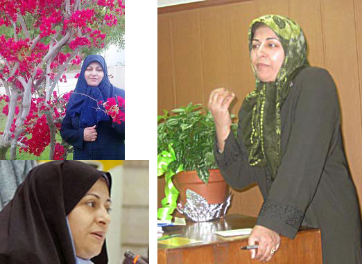

پذيرش > تریبون > مقالات > به فریده ماشینی، خطاب به خودمان /آسیه امینی


 به فریده ماشینی، خطاب به خودمان /آسیه امینی به فریده ماشینی، خطاب به خودمان /آسیه امینی
9 خرداد 1391 - - نسخه قابل چاپ
تغییر برای برابری/آسیه امینی :ناراحتم و عصبانی. از دست حاکمیتی که به نام دین پار بر حلق ما گذاشته، که ما را از هم دور کرده و خوش خوشان میرود تا بساط دیگری برای ریاست جمهوری به پا کنند. ناراحتم از اینکه از هم بیخبریم و عین خیالمان نیست. نگرانم، از دست عزرائیل که نکند وقت ناشناس باشد و در نامناسبترین وضعیت، سرزده از راه برسد. بدون اینکه فرصت بدهد حالی از رفقایمان بپرسیم. بدون اینکه فرصت بدهد به خودمان بیاییم و ببینیم کجای جغرافیای تاریخ ایستادهایم و نسبتمان با گذشته و آینده چیست.
ناراحتم و عصبانی و عقل حکم می کند، در چنین شرایطی زبان در کام کشم تا سر فرصت دقیق تر و منطقی تر بنویسم. اما کدام فرصت؟ نمیدانم چقدر فرصت مانده است. فریده ماشینی در بستر بیماری و در کماست. با مرگ و زندگی دست و پنجه نرم میکند تا به دخترش فرصت بدهد بار دیگر دستهای مادرش را گرم، در دست بگیرد. فرصتی مانده است برای اثبات رفاقت، تعریف کردن خاطره. نقد و نظر، آرزو ، امید ... ؟
به خودم نوید میدهم که برای امید، همیشه فرصت هست. باید برای او از امید بنویسیم.
عصبانیم. یادم است چند بار با گوشه و کنایه با او حرف زده ام. " زنان حکومتی، زنان خودی، جنبش زنانی های نزدیک به قدرت و ... " حالا دلم میخواهد چیز دیگری هم بگویم. مثلا اینکه که همین جنبش زنانی های از قدرت بیرون شده، یکی از رکنهای اساسی همگرایی فعالان حقوق زنان در ایران بوده اند. همان ائتلافهایی که مایه فخر ما به جنبش های سیاسی بوده است. همان همبستگی هایی که از آن به عنوان نشانه های حرکت به سمت سکولاریزم یادکرده ایم.
دلم میخواهد فرصتی باشد تا با تو فریده ماشینی، یک بار دیگر بر سر مفاهیمی چون مبارزه برای حق یا قدرت بحث کنیم. تا تو دوباره تکرار کنی که بی توجهی زنان به مشارکت سیاسی و دور شدن آنها از سیاست و قدرت ، در نهایت به زیان حقوق زنان است و تنها با حرکت در گروههای اجتماعی نمیشود تحول اساسی در شرایط زنان به وجود آورد.
دلم میخواهد بحث کنم و بگویم قدرت زنان اگر پشتوانه زیرساختهای اجتماعی نداشته باشد، در نهایت یک خانم مرکل و کلینتون دیگر بیرون میدهد که دوایی بر درد زنان نیستند و جنبش زنان ایران در شرایطی که تا امروز پشت سر گذاشته، مسیر درستی را طی کرده است؛ آموزش ، آگاهی، اطلاع رسانی ...
دلم میخواهد یک بار دیگر تو از فمینیست اسلامی دفاع کنی و ما در دلمان راضی باشیم که فاصله گرفتن هر زن مسلمانی از بنیادگرایی و سنت گرایی به سمت تغییرخواهی و تحولخواهی را باید به فال نیک گرفت و امیدوار بود و زبانمان همچنان بر این واقعیت پافشاری کند که " هیچ دینی برابری جنسیتی در خود نداشته است و برای باورداشتن به برابری، باید به قانون برابر باور داشت و نظام اجتماعی نیازمند قوانینی زمینی است. زیرا تا کنون کسی از آسمان برای ما زنان تره خرد نکرده است. "
دلم میخواهد این شبها طولانیتر شود. یلدایی که به فعالان زن، دوستان تو، فرصت دهد تا نامه هایی را که در دست نوشتن دارند، به پایان برند و برایت بفرستند. نامه هایی از امید و دوستی، که برای زندگی است. برای امید به سلامتی تو. تا بدانی که هنوز چقدر کار بر زمین مانده است و نمیتوانی از زیر آن شانه خالی کنی.
فریده عزیز، راهمان دور و دلمان تنگ است. دوستانت گلهمندند . حتا از تو که بیماریات را عیان نکردی. فرصت لازم است که بنویسند و بگویند و تو بخوانیشان که در جامعه ای که هنوز تا سکولاریزم بسیار فاصله دارد، مهم است که زنی چون تو بتواند از تابوشکنی زنان مسلمان بنویسد و از فمینیسم دفاع کند.
یادم است، روزی یکی از نواندیشان دینی از لزوم نوشتن درباره مجازات سنگسار در اسلام و ریشهیابی آن سخن گفت. در پاسخ به او گفتم که من نه در این زمینه تخصص دارم و نه علاقهای به تحقیق در این باره. جواب او این بود که مهم علاقه تو نیست. نیاز جامعه ای است که دین در آن ریشه دارد و اگر تو، به عنوان یک فعال اجتماعی، نتوانی آن را بشناسی، خودت محکوم به شکستی.

این حرف تا مدتها ذهنم رادرگیر کرد. چگونه می شد از پس چنین مشکلی برآمد؟
همان روزها بود که مقاله "سنگسار در قرآن" تو در مجله زنان، کنار مطلب خودم منتشر شد و همان روزها بود که فکر می کردم چه خوب است که زنانی با پشتوانه ایدئولوژی، مثل تو نیز به نقد قانون و ساختارهای اجتماعی و سیاسی بنشینند. ما برای بهتر شدن، به کاری همهجانبه نیازمندیم.
بعدها که بیشتر دیدمت در جلسات عمومی فعالان حقوق زن، هم اندیشیها، همگرایی، ائتلاف برای مقابله با لایحه حمایت از خانواده و .... مهمترین نکته اشتراک نظرمان این بود که ما و اندیشه ما تفاوت بسیار دارد، اما از تفاوتها فرار نکنیم!
یادم میآید در جلسه منشور زنان بر لزوم جمع شدن زنانی با اندیشه ها و باورهای مختلف چقدر تاکید داشتی. یادم است چقدر تاکید داشتی که ما فعالان زن باید به تحقیقهای میدانی رو بیاوریم تا مسائل زنان را واقعیتر لمس کنیم.
اما راه درازی در پیش است فریده عزیز و درهای بسته بسیاری است که نیاز به همیاری ما دارد. درهای بستهای که نمی دانم آیا بازهم نواندیشان دینی می توانند با منطق دینی برایشان چارهای بجویند؟ پاسخ به این سوال کار این روزها وشبها نیست. اما بحثی است که ناچاریم به ادامه آن. و هنوز امید داریم که تو در این بحثها در کنارمان باشی.
نه فقط تو، که همه دوستان و زنانی که از هم دور افتادهایم؛ یکی درعزلت، یکی در زندان، یکی در تبعید و یکی مثل تو، در بستر بیماری، که شنیدهایم حتا با وجود بیماری همنشین خانوادههای زندانیان سیاسی بودهای.
لابد میدانی که منیژه نجم عراقی هم مهمان اوین شده است. می بینی زندانبانها و عزارئیل دست در دست هم به ما امان نمی دهند تا چاره دیگری کنیم.
اما جدا از این حرفها ، فریده ماشینی عزیز!
دوستانت نگران تواند. و نگران حرفهای نگفته. نگران کارهای بر زمین مانده. نگران اینکه آیا میتوانی دلنوشتههایی که برایت آرزوی سلامتی دارند را بخوانی؟ آنها از اینکه فرصت همدلی با تو از ایشان گرفته شده، دلخورند. می بینی؟ انگار تنها مرگ است که بین ما خودی و ناخودی نمی کند.
جنبش زنان هم خودی و ناخودی دارد. درست مثل حکومت ایران، مثل گروه های سیاسی درون حکومتی، مثل گروه های سیاسی برون حکومتی درون کشور و بیرون، مثل اپوزیسیون رسمی و غیر رسمی، مثل جنبش های اجتماعی دیگر؛ جنبش دانشجویی، جنبش کارگران و زحمت کشان، مثل جامعه مدنی...
ما هم خودی و ناخودی داریم و باید هم نگران باشیم!
فقط پای مرگ اگر در میان باشد، حقوقمان برابر است؛ راهی که همه دیر یا زود، طی میکنیم. کاش از مرگ بیشتر بیاموزیم!
فریده جان، دلمان برای صدای خوش تو تنگ است. دلمان برای خودمان هم تنگ است. برای بودن در کنار هم و باور کردن اینکه ما با همه تفاوتها به هم نیاز داریم.
فریده عزیز برایت آرزوی سلامتی، شادی و آرامش داریم. کاش به خانه برگردی و خودت با صدای بلند خواننده نامهام باشی.
ارسال به
بالاترین
،
توییتر
،
فریندفید
،
فیسبوک
در همين بخش :
 دهمین دورۀ مراسم تندیس صدیقه دولت آبادی ۱۳۹۲ دهمین دورۀ مراسم تندیس صدیقه دولت آبادی ۱۳۹۲
کارت پستالهایی به بهانهی هشت مارس و به یاد همهی مبارزین راه برابری
بیانیه بیش از 350 تن از مدافعان حقوق زنان به مناسبت روز جهانی زن؛ زنان هر روز فرودستتر میشوند
لباسی که برای تن ما دوخته اند! /اعظم بهرامی
چالشها و چشمانداز فعالیت مدنی زنان
ديگر بخش ها :
طرح یک میلیون امضا
|
مقالات
|
سایت نوشته ها
|
اخبار
|
گزارش كمپين
|
گفت و گو
|
علیه سکوت
|
كوچه به كوچه
|
نامه های شما
|
گزارش ویژه
|
گفتگو با اعضا
|
ویژه سالگرد کمپین
|
تصویر برابری
|
دل آرام علی
|
تریبون
|
مقالات
|
تاریخ شفاهی
|
خارج از چارچوب
|
کتابخانه
|
درباره کمپین
|
کمپین در شهرها
|
کمپین در بند
|
صدای تغییر
|
ویژه 22 خرداد
|
لایحه حمایت از خانواده
|
گالری
|
عشا مومنی
|
امیر یعقوبعلی
|
خدیجه مقدم
|
راحله عسگری زاده و نسیم خسروی
|
پروین اردلان،جلوه جواهری، مریم حسین خواه، ناهید کشاورز
|
زینب پیغمبرزاده
|
سعیده امین، سارا ایمانیان، محبوبه حسین زاده، ناهید کشاورز و همایون نامی
|
احترام شادفر
|
نسیم سرابندی زاده،فاطمه دهدشتی
|
وبلاگ مهمان
|
پرونده خرم آباد
|
دستگیری ها
|
مریم مالک
|
پرستو اللهیاری
|
مهرنوش اعتمادی
|
سمیه رشیدی
|
Other Languages
|
همراهان
|
«فراخوان کمپین ده روز با بهاره هدایت»
| English
|